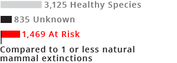

A DISAPPEARING PLANET
A long time ago, before humans became the primary contributor to animal extinctions, no more than a handful of species would go extinct per century. Today, Earth’s species are dying out en masse, at rates anywhere from 100 to 1,000 times their natural extinction rates. A product of a variety of human effects including climate change, habitat destruction, and species displacement, these rates rival those that occurred 65 million years ago, during the dinosaur extinction.
MAMMALS
1,469 mammal species at risk
According to the natural extinction rate, we should not see more than one mammal species go extinct per century.
However, 1,469 are currently at risk for extinction.
Notice the red cluster around primates, especially lemurs.
Rhinos, elephants, bears and big cats are also in trouble.

Interactive version available only on desktop

MAMMALS
According to the natural extinction rate, we should not see more than one mammal species go extinct per century. However, 1,469 are currently at risk for extinction. Primates are highly at risk, especially the lemur family. Rhinos, bears, and big cats are also in trouble.

REPTILES

According to the natural extinction rate, we should not see more than one reptile extinction per century. However, 1,163 are currently at risk for extinction. Especially endangered groups include the order of turtles, as well as the chameleon and iguana families.
AMPHIBIANS

According to the natural extinction rate, we should not see more than one amphibian extinction per century. However, 2,341 are currently at risk for extinction. Frogs have been hit hard, with families like the water frog, shrub frog, and dancing frog in great danger.

BIRDS

According to the natural extinction rate, we should not see more than one bird extinction per century. However, 2,200 are currently at risk for extinction. Albatrosses, penguins, hornbills and parrots are particularly at risk.